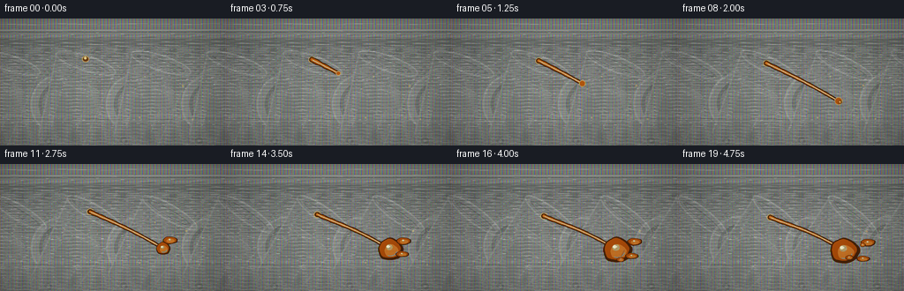
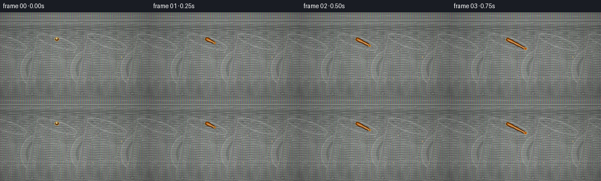
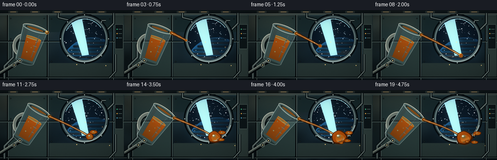
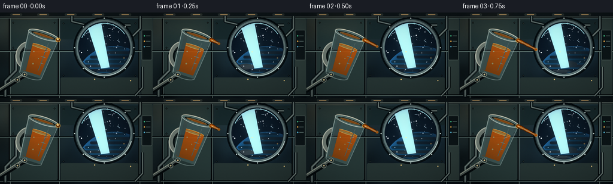

CODING AGENTS AS PIXEL WORLD MODELS
traex/DeepSeek-V4.1-Flash · phygen_002
点击播放 · 原生 RGB 像素
逐轮保存的候选
回放视频、检查图与代码变化。
每份候选均可单独播放。实际图片检查记录在下方工具轨迹中。
候选 01播放与检查图
点击播放 · 原生 RGB 像素


展开代码变化
--- 上一保存版本
+++ 本次保存版本
@@ -0,0 +1,782 @@
+from __future__ import annotations
+
+import math
+from pathlib import Path
+
+import numpy as np
+from PIL import Image, ImageDraw, ImageFilter
+from scipy.ndimage import gaussian_filter
+
+import artifact_io
+
+
+WIDTH = 256
+HEIGHT = 144
+FRAME_COUNT = 20
+FPS = 4.0
+SS = 4
+W = WIDTH * SS
+H = HEIGHT * SS
+
+CASE_DIR = Path(__file__).resolve().parent
+RNG = np.random.default_rng(314159)
+
+
+def smoothstep(value: float) -> float:
+ value = min(1.0, max(0.0, value))
+ return value * value * (3.0 - 2.0 * value)
+
+
+def sc(value: float) -> int:
+ return int(round(value * SS))
+
+
+def rgba_image() -> Image.Image:
+ return Image.new("RGBA", (W, H), (0, 0, 0, 0))
+
+
+def add_soft_glow(base: Image.Image, glow: Image.Image, radius: float, amount: float) -> None:
+ blurred = glow.filter(ImageFilter.GaussianBlur(radius * SS))
+ glow_array = np.asarray(blurred, dtype=np.float32) / 255.0
+ base_array = np.asarray(base, dtype=np.float32) / 255.0
+ alpha = glow_array[..., 3:4] * amount
+ base_array[..., :3] = np.clip(
+ base_array[..., :3] + glow_array[..., :3] * alpha, 0.0, 1.0
+ )
+ base.paste(Image.fromarray(np.round(base_array * 255).astype(np.uint8), "RGB"))
+
+
+def draw_star_field(content: Image.Image, cx: float, cy: float, radius: float, frame_index: int) -> None:
+ draw = ImageDraw.Draw(content, "RGBA")
+ local_rng = np.random.default_rng(771 + frame_index // 10)
+ for _ in range(90):
+ angle = local_rng.uniform(0.0, math.tau)
+ distance = radius * math.sqrt(local_rng.uniform(0.02, 0.98))
+ x = cx + math.cos(angle) * distance
+ y = cy + math.sin(angle) * distance
+ brightness = int(local_rng.uniform(95, 255))
+ size = local_rng.choice([0.32, 0.42, 0.55, 0.75, 1.0])
+ color = (brightness, min(255, brightness + 8), min(255, brightness + 18), 235)
+ draw.ellipse(
+ (sc(x - size), sc(y - size), sc(x + size), sc(y + size)),
+ fill=color,
+ )
+ for x, y, length, angle in [
+ (146, 34, 3.2, -0.5),
+ (198, 48, 2.7, 0.7),
+ (183, 27, 2.2, 0.15),
+ ]:
+ dx = math.cos(angle) * length
+ dy = math.sin(angle) * length
+ draw.line((sc(x - dx), sc(y - dy), sc(x + dx), sc(y + dy)), fill=(205, 236, 255, 150), width=SS)
+
+
+def make_earth(cx: float, cy: float, radius: float) -> Image.Image:
+ layer = rgba_image()
+ earth = Image.new("RGBA", (W, H), (0, 0, 0, 0))
+ draw = ImageDraw.Draw(earth, "RGBA")
+ bbox = (sc(cx - radius), sc(cy - radius), sc(cx + radius), sc(cy + radius))
+ draw.ellipse(bbox, fill=(26, 93, 143, 255))
+
+ # Cloud belts and ocean variation, clipped to the planet.
+ for band in range(18):
+ yy = cy - radius + (band + 0.5) * (2.0 * radius / 18.0)
+ wave = 2.1 * math.sin(band * 1.38) + 1.1 * math.sin(band * 0.47 + 1.3)
+ half_width = math.sqrt(max(0.0, radius * radius - (yy - cy) ** 2))
+ alpha = int(18 + 28 * (0.5 + 0.5 * math.sin(band * 2.1)))
+ color = (198, 224, 224, alpha) if band % 3 else (46, 135, 181, 80)
+ draw.rounded_rectangle(
+ (
+ sc(cx - half_width * 0.92 + wave),
+ sc(yy - 2.0),
+ sc(cx + half_width * 0.82 + wave),
+ sc(yy + 2.4),
+ ),
+ radius=sc(2.0),
+ fill=color,
+ )
+ for _ in range(12):
+ x = cx + RNG.uniform(-radius * 0.65, radius * 0.75)
+ y = cy + RNG.uniform(-radius * 0.55, radius * 0.62)
+ rx = RNG.uniform(radius * 0.12, radius * 0.33)
+ ry = RNG.uniform(radius * 0.025, radius * 0.09)
+ draw.ellipse(
+ (sc(x - rx), sc(y - ry), sc(x + rx), sc(y + ry)),
+ fill=(222, 235, 226, RNG.integers(45, 85)),
+ )
+
+ # Directional planet shading, with a narrow atmospheric rim.
+ arr = np.asarray(earth, dtype=np.float32) / 255.0
+ yy, xx = np.mgrid[0:H, 0:W]
+ nx = (xx / SS - cx) / radius
+ ny = (yy / SS - cy) / radius
+ radial = np.sqrt(nx * nx + ny * ny)
+ mask = radial <= 1.0
+ light = np.clip(0.64 - 0.30 * nx + 0.34 * ny, 0.14, 1.0)
+ rim = np.clip((radial - 0.87) / 0.13, 0.0, 1.0)
+ arr[..., :3] *= light[..., None]
+ arr[..., 0] += mask * rim * 0.05
+ arr[..., 1] += mask * rim * 0.12
+ arr[..., 2] += mask * rim * 0.20
+ arr[..., 3] *= mask
+ layer.paste(Image.fromarray(np.clip(arr * 255, 0, 255).astype(np.uint8), "RGBA"))
+ return layer
+
+
+def draw_window(img: Image.Image, frame_index: int) -> None:
+ cx, cy, radius = 174.0, 59.0, 43.5
+ draw = ImageDraw.Draw(img, "RGBA")
+
+ # Deep mounting shadow and a layered metal bezel.
+ draw.ellipse(
+ (sc(cx - radius - 8), sc(cy - radius - 8), sc(cx + radius + 8), sc(cy + radius + 8)),
+ fill=(2, 6, 8, 170),
+ )
+ draw.ellipse(
+ (sc(cx - radius - 5), sc(cy - radius - 5), sc(cx + radius + 5), sc(cy + radius + 5)),
+ fill=(42, 55, 57, 255),
+ )
+ draw.ellipse(
+ (sc(cx - radius - 3), sc(cy - radius - 3), sc(cx + radius + 3), sc(cy + radius + 3)),
+ fill=(91, 110, 110, 255),
+ )
+ draw.ellipse(
+ (sc(cx - radius), sc(cy - radius), sc(cx + radius), sc(cy + radius)),
+ fill=(7, 16, 25, 255),
+ )
+
+ content = rgba_image()
+ cd = ImageDraw.Draw(content, "RGBA")
+ cd.ellipse(
+ (sc(cx - radius), sc(cy - radius), sc(cx + radius), sc(cy + radius)),
+ fill=(5, 12, 22, 255),
+ )
+ draw_star_field(content, cx, cy, radius - 1.0, frame_index)
+ earth = make_earth(191.5, 123.0, 67.0)
+ content.alpha_composite(earth)
+
+ mask = Image.new("L", (W, H), 0)
+ ImageDraw.Draw(mask).ellipse(
+ (sc(cx - radius + 1), sc(cy - radius + 1), sc(cx + radius - 1), sc(cy + radius - 1)),
+ fill=255,
+ )
+ content.putalpha(Image.composite(content.getchannel("A"), Image.new("L", (W, H), 0), mask))
+ img.alpha_composite(content)
+
+ # Glass and bezel reflections.
+ draw = ImageDraw.Draw(img, "RGBA")
+ draw.arc(
+ (sc(cx - radius + 2), sc(cy - radius + 2), sc(cx + radius - 2), sc(cy + radius - 2)),
+ 204,
+ 326,
+ fill=(151, 214, 222, 95),
+ width=sc(1.2),
+ )
+ draw.arc(
+ (sc(cx - radius - 4), sc(cy - radius - 4), sc(cx + radius + 4), sc(cy + radius + 4)),
+ 16,
+ 134,
+ fill=(215, 234, 229, 125),
+ width=sc(1.1),
+ )
+ draw.polygon(
+ [
+ (sc(cx - 27), sc(cy - 33)),
+ (sc(cx - 5), sc(cy - 41)),
+ (sc(cx + 9), sc(cy + 33)),
+ (sc(cx - 5), sc(cy + 35)),
+ ],
+ fill=(161, 222, 234, 12),
+ )
+ for angle in range(0, 360, 45):
+ px = cx + math.cos(math.radians(angle)) * (radius + 6.0)
+ py = cy + math.sin(math.radians(angle)) * (radius + 6.0)
+ draw.ellipse(
+ (sc(px - 1.1), sc(py - 1.1), sc(px + 1.1), sc(py + 1.1)),
+ fill=(185, 203, 198, 120),
+ )
+
+
+def draw_pipe(
+ img: Image.Image,
+ points: list[tuple[float, float]],
+ width: float,
+ dark=(19, 28, 30, 255),
+ mid=(65, 78, 77, 255),
+ highlight=(141, 157, 149, 140),
+) -> None:
+ draw = ImageDraw.Draw(img, "RGBA")
+ scaled = [(sc(x), sc(y)) for x, y in points]
+ draw.line(scaled, fill=(2, 5, 6, 150), width=sc(width + 3.0), joint="curve")
+ draw.line(scaled, fill=dark, width=sc(width + 1.5), joint="curve")
+ draw.line(scaled, fill=mid, width=sc(width), joint="curve")
+ draw.line(scaled, fill=highlight, width=sc(max(0.8, width * 0.22)), joint="curve")
+
+
+def render_background(frame_index: int) -> Image.Image:
+ yy, xx = np.mgrid[0:H, 0:W]
+ x = xx / SS
+ y = yy / SS
+ vertical = np.clip(y / HEIGHT, 0.0, 1.0)
+ base = np.zeros((H, W, 3), dtype=np.float32)
+ base[..., 0] = 9.0 + 15.0 * (1.0 - vertical)
+ base[..., 1] = 15.0 + 25.0 * (1.0 - vertical)
+ base[..., 2] = 18.0 + 25.0 * (1.0 - vertical)
+
+ warm = np.exp(-(((x - 33.0) / 88.0) ** 2 + ((y - 17.0) / 50.0) ** 2))
+ cool = np.exp(-(((x - 175.0) / 75.0) ** 2 + ((y - 62.0) / 70.0) ** 2))
+ base[..., 0] += warm * 24.0 + cool * 3.0
+ base[..., 1] += warm * 17.0 + cool * 9.0
+ base[..., 2] += warm * 9.0 + cool * 17.0
+
+ panel_noise = gaussian_filter(RNG.normal(0.0, 1.0, (H, W)), 11.0 * SS)
+ panel_noise /= max(1e-5, float(np.std(panel_noise)))
+ base += panel_noise[..., None] * np.array([2.0, 3.0, 3.2], dtype=np.float32)
+
+ img = Image.fromarray(np.clip(base, 0, 255).astype(np.uint8), "RGB").convert("RGBA")
+ draw = ImageDraw.Draw(img, "RGBA")
+
+ # Broad wall panels.
+ panels = [
+ (18, 12, 96, 61, (32, 49, 49, 20)),
+ (18, 66, 96, 137, (38, 54, 52, 24)),
+ (101, 13, 231, 45, (22, 37, 39, 34)),
+ (101, 109, 231, 140, (37, 50, 48, 18)),
+ (236, 10, 255, 138, (45, 59, 56, 25)),
+ ]
+ for left, top, right, bottom, color in panels:
+ draw.rounded_rectangle(
+ (sc(left), sc(top), sc(right), sc(bottom)),
+ radius=sc(2.2),
+ fill=color,
+ )
+
+ # Structural seams with thin metallic catchlights.
+ for sx in (15.5, 97.5, 232.0):
+ draw.line((sc(sx), 0, sc(sx), H), fill=(3, 7, 8, 205), width=sc(2.5))
+ draw.line((sc(sx + 1.4), 0, sc(sx + 1.4), H), fill=(104, 124, 119, 45), width=SS)
+ for sy in (8.0, 64.0, 138.0):
+ draw.line((0, sc(sy), W, sc(sy)), fill=(3, 7, 8, 185), width=sc(2.0))
+ draw.line((0, sc(sy + 1.2), W, sc(sy + 1.2)), fill=(96, 117, 112, 42), width=SS)
+
+ # Ceiling ribs and recessed warm task lights.
+ draw.rectangle((0, 0, W, sc(8)), fill=(12, 18, 20, 255))
+ for rx in (27, 72, 118, 164, 209):
+ draw.rounded_rectangle(
+ (sc(rx - 10), sc(1.5), sc(rx + 10), sc(5.5)),
+ radius=sc(1.8),
+ fill=(37, 45, 43, 255),
+ )
+ draw.line(
+ (sc(rx - 6), sc(3.6), sc(rx + 6), sc(3.6)),
+ fill=(255, 196, 120, 150),
+ width=sc(0.8),
+ )
+ draw.line((0, sc(7.2), W, sc(7.2)), fill=(129, 143, 133, 60), width=SS)
+
+ # Pipes give the frame a lived-in station feel without crowding the action.
+ draw_pipe(img, [(9, 141), (9, 115), (27, 97), (27, 71), (42, 58)], 3.4)
+ draw_pipe(img, [(234, 6), (234, 27), (219, 42), (219, 59)], 2.6)
+ draw_pipe(img, [(120, 6), (120, 15), (145, 21), (218, 21)], 2.2)
+ draw_pipe(img, [(238, 91), (238, 126), (225, 140)], 2.0)
+
+ # Instrument blocks and small status lamps on the right wall.
+ draw.rounded_rectangle(
+ (sc(236.5), sc(29), sc(254.0), sc(80)),
+ radius=sc(2.0),
+ fill=(11, 18, 20, 210),
+ outline=(74, 89, 85, 105),
+ width=SS,
+ )
+ for i, color in enumerate(
+ [(69, 203, 142, 210), (242, 177, 78, 210), (83, 178, 211, 170)]
+ ):
+ cy = 38 + i * 9
+ draw.ellipse(
+ (sc(240), sc(cy), sc(242.2), sc(cy + 2.2)),
+ fill=color,
+ )
+ draw.line((sc(244), sc(cy + 1), sc(251), sc(cy + 1)), fill=(97, 119, 115, 80), width=SS)
+
+ # Rivets and panel corners.
+ for x, y in [(22, 17), (91, 17), (22, 59), (91, 59), (106, 18), (226, 18), (106, 106), (226, 106)]:
+ draw.ellipse(
+ (sc(x - 1.2), sc(y - 1.2), sc(x + 1.2), sc(y + 1.2)),
+ fill=(116, 131, 126, 75),
+ outline=(2, 6, 7, 130),
+ width=SS,
+ )
+
+ draw_window(img, frame_index)
+
+ # Warm and cool bounce light around the porthole.
+ glow = rgba_image()
+ gd = ImageDraw.Draw(glow, "RGBA")
+ gd.ellipse(
+ (sc(126), sc(15), sc(220), sc(109)),
+ fill=(66, 154, 184, 28),
+ )
+ gd.ellipse(
+ (sc(4), sc(0), sc(105), sc(47)),
+ fill=(255, 177, 89, 18),
+ )
+ add_soft_glow(img, glow, 10.0, 0.55)
+
+ return img
+
+
+def make_cup_layer(angle: float, fill_fraction: float, frame_index: int) -> Image.Image:
+ layer = Image.new("RGBA", (160 * SS, 160 * SS), (0, 0, 0, 0))
+ draw = ImageDraw.Draw(layer, "RGBA")
+
+ # Ceramic-and-metal handle, partly covered by the glass body.
+ handle_bbox = (sc(45), sc(58), sc(88), sc(106))
+ draw.ellipse(handle_bbox, outline=(3, 8, 9, 210), width=sc(10.0))
+ draw.ellipse(handle_bbox, outline=(108, 119, 111, 255), width=sc(7.0))
+ draw.arc(handle_bbox, 100, 245, fill=(221, 225, 207, 190), width=sc(1.7))
+ draw.arc(handle_bbox, 250, 350, fill=(51, 61, 60, 175), width=sc(1.2))
+
+ body = [(54, 41), (106, 41), (99, 113), (61, 113)]
+ interior = [(58.5, 44.5), (101.5, 44.5), (95.0, 109.0), (65.0, 109.0)]
+
+ # Dark interior and a translucent glass envelope.
+ draw.polygon([(sc(x), sc(y)) for x, y in interior], fill=(5, 11, 12, 175))
+ draw.polygon([(sc(x), sc(y)) for x, y in body], fill=(117, 151, 151, 72))
+ draw.line([(sc(54), sc(41)), (sc(61), sc(113))], fill=(199, 224, 218, 150), width=sc(1.5))
+ draw.line([(sc(106), sc(41)), (sc(99), sc(113))], fill=(174, 205, 202, 115), width=sc(1.2))
+ draw.arc((sc(60), sc(105), sc(100), sc(119)), 8, 172, fill=(181, 207, 201, 110), width=sc(1.2))
+
+ # Oil volume, clipped to the cup interior.
+ top = 58.0 + 15.0 * (1.0 - fill_fraction)
+ oil = Image.new("RGBA", layer.size, (0, 0, 0, 0))
+ od = ImageDraw.Draw(oil, "RGBA")
+ oil_poly = [(63, top), (98, top), (95, 108), (65, 108)]
+ od.polygon([(sc(x), sc(y)) for x, y in oil_poly], fill=(127, 55, 8, 235))
+ for band in range(18):
+ by0 = top + (108.0 - top) * band / 18.0
+ by1 = top + (108.0 - top) * (band + 1) / 18.0 + 0.4
+ warm = int(133 + 54 * (1.0 - band / 18.0))
+ od.rectangle(
+ (sc(62), sc(by0), sc(99), sc(by1)),
+ fill=(warm, int(60 + 18 * (1.0 - band / 18.0)), 5, 225),
+ )
+ od.ellipse(
+ (sc(62.0), sc(top - 2.2), sc(99.0), sc(top + 3.8)),
+ fill=(184, 93, 13, 235),
+ outline=(255, 197, 91, 165),
+ width=SS,
+ )
+ od.ellipse(
+ (sc(68), sc(top + 0.1), sc(94), sc(top + 2.6)),
+ fill=(242, 160, 48, 120),
+ )
+ for bx, by, br in [(73, 73, 1.0), (84, 82, 0.8), (78, 93, 1.2), (90, 69, 0.7)]:
+ od.ellipse(
+ (sc(bx - br), sc(by - br), sc(bx + br), sc(by + br)),
+ fill=(255, 211, 113, 105),
+ )
+ mask = Image.new("L", layer.size, 0)
+ ImageDraw.Draw(mask).polygon([(sc(x), sc(y)) for x, y in interior], fill=255)
+ oil.putalpha(Image.composite(oil.getchannel("A"), Image.new("L", layer.size, 0), mask))
+ layer.alpha_composite(oil)
+
+ # Glass sheen and rim.
+ draw = ImageDraw.Draw(layer, "RGBA")
+ draw.polygon(
+ [(sc(60), sc(47)), (sc(66), sc(47)), (sc(70), sc(108)), (sc(64), sc(108))],
+ fill=(228, 244, 235, 30),
+ )
+ draw.line((sc(92), sc(52), sc(90), sc(101)), fill=(223, 244, 236, 55), width=sc(1.2))
+ for tick_y, tick_len in [(66, 6), (77, 8), (88, 5)]:
+ draw.line(
+ (sc(94.5 - tick_len), sc(tick_y), sc(94.5), sc(tick_y)),
+ fill=(221, 238, 231, 95),
+ width=SS,
+ )
+
+ rim_bbox = (sc(53), sc(35), sc(107), sc(49))
+ draw.ellipse(rim_bbox, fill=(121, 160, 159, 115), outline=(223, 239, 228, 175), width=sc(1.5))
+ draw.ellipse(
+ (sc(57.5), sc(38.2), sc(102.5), sc(46.4)),
+ fill=(18, 16, 10, 225),
+ outline=(156, 190, 184, 125),
+ width=SS,
+ )
+ draw.ellipse(
+ (sc(62), sc(40.2), sc(98), sc(45.0)),
+ fill=(153, 72, 8, 210),
+ outline=(255, 204, 112, 85),
+ width=SS,
+ )
+ draw.arc(rim_bbox, 195, 342, fill=(255, 246, 218, 205), width=sc(1.0))
+
+ rotated = layer.rotate(
+ -angle,
+ center=(80 * SS, 80 * SS),
+ resample=Image.Resampling.BICUBIC,
+ )
+ return rotated
+
+
+def cup_lip(angle: float) -> tuple[float, float]:
+ theta = math.radians(angle)
+ rx, ry = 25.0, -38.0
+ x = 61.0 + rx * math.cos(theta) - ry * math.sin(theta)
+ y = 74.0 + rx * math.sin(theta) + ry * math.cos(theta)
+ return x, y
+
+
+def bezier(p0, p1, p2, p3, u):
+ u = np.asarray(u, dtype=np.float32)
+ omt = 1.0 - u
+ return (
+ (omt**3)[..., None] * np.asarray(p0)
+ + (3.0 * omt**2 * u)[..., None] * np.asarray(p1)
+ + (3.0 * omt * u**2)[..., None] * np.asarray(p2)
+ + (u**3)[..., None] * np.asarray(p3)
+ )
+
+
+def draw_ribbon(draw: ImageDraw.ImageDraw, points: np.ndarray, widths: np.ndarray, color) -> None:
+ left = []
+ right = []
+ for idx, point in enumerate(points):
+ if idx == 0:
+ tangent = points[1] - points[0]
+ elif idx == len(points) - 1:
+ tangent = points[-1] - points[-2]
+ else:
+ tangent = points[idx + 1] - points[idx - 1]
+ norm = max(1e-5, float(np.linalg.norm(tangent)))
+ normal = np.array([-tangent[1], tangent[0]], dtype=np.float32) / norm
+ half = widths[idx] * 0.5
+ left.append((sc(point[0] + normal[0] * half), sc(point[1] + normal[1] * half)))
+ right.append((sc(point[0] - normal[0] * half), sc(point[1] - normal[1] * half)))
+ draw.polygon(left + list(reversed(right)), fill=color)
+ for idx in range(0, len(points), 3):
+ radius = max(0.5, widths[idx] * 0.5)
+ draw.ellipse(
+ (sc(points[idx, 0] - radius), sc(points[idx, 1] - radius),
+ sc(points[idx, 0] + radius), sc(points[idx, 1] + radius)),
+ fill=color,
+ )
+
+
+def draw_oil_blob(
+ layer: Image.Image,
+ glow: Image.Image,
+ center: tuple[float, float],
+ radius: float,
+ seed: int,
+ frame_index: int,
+ stretch: float = 1.0,
+) -> None:
+ if radius <= 0.35:
+ return
+ cx, cy = center
+ local_rng = np.random.default_rng(seed)
+ phase = frame_index * 0.17 + seed * 0.37
+ wobble = [local_rng.uniform(0.0, math.tau) for _ in range(5)]
+ points = []
+ for idx in range(72):
+ theta = math.tau * idx / 72.0
+ radial = 1.0
+ radial += 0.035 * math.sin(3 * theta + wobble[0] + phase)
+ radial += 0.024 * math.sin(5 * theta + wobble[1] - phase * 0.6)
+ radial += 0.013 * math.sin(8 * theta + wobble[2] + phase * 0.3)
+ x = cx + math.cos(theta) * radius * stretch * radial
+ y = cy + math.sin(theta) * radius * radial
+ points.append((sc(x), sc(y)))
+
+ gd = ImageDraw.Draw(glow, "RGBA")
+ gd.ellipse(
+ (sc(cx - radius * 1.25), sc(cy - radius * 1.15),
+ sc(cx + radius * 1.25), sc(cy + radius * 1.15)),
+ fill=(255, 124, 24, int(48 + min(55, radius * 3.0))),
+ )
+
+ draw = ImageDraw.Draw(layer, "RGBA")
+ draw.polygon(points, fill=(67, 26, 2, 255))
+ inner = [
+ (
+ sc(cx + (px / SS - cx) * 0.84 - radius * 0.06),
+ sc(cy + (py / SS - cy) * 0.84 - radius * 0.06),
+ )
+ for px, py in points
+ ]
+ draw.polygon(inner, fill=(167, 70, 5, 255))
+ core = [
+ (
+ sc(cx + (px / SS - cx) * 0.55 + radius * 0.08),
+ sc(cy + (py / SS - cy) * 0.55 + radius * 0.12),
+ )
+ for px, py in points
+ ]
+ draw.polygon(core, fill=(214, 108, 12, 205))
+
+ # Transmission caustic, window reflection, and hard specular glint.
+ draw.ellipse(
+ (
+ sc(cx - radius * 0.40), sc(cy - radius * 0.44),
+ sc(cx + radius * 0.18), sc(cy + radius * 0.06),
+ ),
+ fill=(255, 198, 72, 105),
+ )
+ draw.ellipse(
+ (
+ sc(cx - radius * 0.36), sc(cy - radius * 0.38),
+ sc(cx - radius * 0.07), sc(cy - radius * 0.13),
+ ),
+ fill=(255, 249, 208, 225),
+ )
+ draw.ellipse(
+ (
+ sc(cx - radius * 0.14), sc(cy - radius * 0.31),
+ sc(cx - radius * 0.02), sc(cy - radius * 0.20),
+ ),
+ fill=(255, 255, 235, 185),
+ )
+ if radius > 4.5:
+ draw.arc(
+ (
+ sc(cx - radius * 0.62), sc(cy - radius * 0.48),
+ sc(cx + radius * 0.62), sc(cy + radius * 0.62),
+ ),
+ 15,
+ 112,
+ fill=(125, 222, 231, 55),
+ width=sc(1.1),
+ )
+
+
+def draw_oil_system(img: Image.Image, frame_index: int, lip: tuple[float, float]) -> None:
+ t = frame_index / (FRAME_COUNT - 1)
+ flow = smoothstep((frame_index - 0.4) / 7.2)
+ blob_growth = smoothstep((frame_index - 5.8) / 10.5)
+
+ blob_center = (179.5 + 0.48 * frame_index, 91.8 + 0.35 * frame_index)
+ blob_radius = 0.4 + 14.0 * blob_growth
+ p0 = np.array(lip, dtype=np.float32)
+ p1 = np.array((lip[0] + 17.5, lip[1] + 8.5), dtype=np.float32)
+ p2 = np.array((146.0, 72.0), dtype=np.float32)
+ p3 = np.array(blob_center, dtype=np.float32)
+
+ oil = rgba_image()
+ glow = rgba_image()
+ draw = ImageDraw.Draw(oil, "RGBA")
+
+ # Meniscus at the pouring lip.
+ draw.ellipse(
+ (sc(lip[0] - 3.8), sc(lip[1] - 3.4), sc(lip[0] + 4.4), sc(lip[1] + 4.0)),
+ fill=(96, 41, 4, 235),
+ outline=(255, 182, 55, 120),
+ width=SS,
+ )
+ draw.ellipse(
+ (sc(lip[0] - 1.4), sc(lip[1] - 2.3), sc(lip[0] + 1.6), sc(lip[1] + 0.6)),
+ fill=(255, 222, 133, 190),
+ )
+
+ if frame_index >= 1:
+ visible_u = min(0.985, 0.10 + 0.112 * frame_index)
+ sample_u = np.linspace(0.0, visible_u, max(12, int(90 * visible_u)))
+ centerline = bezier(p0, p1, p2, p3, sample_u)
+ width_start = 4.7 - 1.7 * flow
+ width_end = 2.6 - 0.8 * flow
+ widths = np.linspace(width_start, width_end, len(sample_u))
+ widths *= 1.0 + 0.12 * np.sin(sample_u * 38.0 - frame_index * 0.65)
+ draw_ribbon(draw, centerline, widths + 2.1, (56, 23, 2, 255))
+ draw_ribbon(draw, centerline, widths, (173, 75, 5, 245))
+ draw_ribbon(draw, centerline, np.maximum(0.7, widths * 0.28), (244, 137, 18, 190))
+
+ # A thin, offset specular line gives the stream a glassy oil surface.
+ tangent = np.gradient(centerline, axis=0)
+ norm = np.sqrt(np.sum(tangent * tangent, axis=1, keepdims=True)) + 1e-5
+ normal = np.stack((-tangent[:, 1], tangent[:, 0]), axis=1) / norm
+ spec = centerline + normal * (widths[:, None] * 0.18)
+ spec[:, 1] -= 0.55
+ draw.line(
+ [(sc(px), sc(py)) for px, py in spec[2:-2:2]],
+ fill=(255, 231, 164, 145),
+ width=SS,
+ joint="curve",
+ )
+
+ if blob_growth < 0.25:
+ tip_radius = 2.1 + 2.4 * flow
+ draw.ellipse(
+ (sc(centerline[-1, 0] - tip_radius), sc(centerline[-1, 1] - tip_radius),
+ sc(centerline[-1, 0] + tip_radius), sc(centerline[-1, 1] + tip_radius)),
+ fill=(172, 74, 5, 245),
+ outline=(255, 171, 44, 105),
+ width=SS,
+ )
+
+ if blob_growth > 0.01:
+ draw_oil_blob(
+ oil,
+ glow,
+ blob_center,
+ blob_radius,
+ seed=44,
+ frame_index=frame_index,
+ stretch=1.0 + 0.16 * t,
+ )
+
+ # Satellite droplets pinch off and drift slowly away from the main globule.
+ satellites = [
+ (9, (187.0, 85.8), (7.8, 0.9), 4.2, 2.0),
+ (12, (195.5, 100.0), (5.6, 2.9), 3.3, 2.3),
+ (15, (190.0, 109.0), (2.8, -2.1), 2.7, 1.7),
+ (17, (203.0, 92.0), (8.5, -0.6), 2.2, 1.4),
+ ]
+ for spawn, start, velocity, radius, stretch in satellites:
+ if frame_index < spawn:
+ continue
+ age = (frame_index - spawn) / FPS
+ center = (
+ start[0] + velocity[0] * age * 1.45,
+ start[1] + velocity[1] * age * 1.45,
+ )
+ draw_oil_blob(
+ oil,
+ glow,
+ center,
+ radius,
+ seed=100 + spawn,
+ frame_index=frame_index,
+ stretch=stretch,
+ )
+ if frame_index <= spawn + 1:
+ draw.line(
+ (
+ sc(blob_center[0] + blob_radius * 0.55),
+ sc(blob_center[1]),
+ sc(center[0] - radius * 0.5),
+ sc(center[1]),
+ ),
+ fill=(173, 75, 5, 165),
+ width=sc(1.0),
+ )
+
+ # Soft amber spill light before the crisp oil layer.
+ add_soft_glow(img, glow, 4.0, 0.32)
+ img.alpha_composite(oil)
+
+ # A few loose micro-droplets in the surrounding space.
+ loose = rgba_image()
+ ld = ImageDraw.Draw(loose, "RGBA")
+ for idx, (x0, y0, r) in enumerate(
+ [(158, 112, 1.0), (207, 76, 1.2), (218, 114, 0.9), (164, 66, 0.8)]
+ ):
+ x = x0 + 0.35 * idx * frame_index
+ y = y0 + 0.28 * math.sin(frame_index * 0.32 + idx)
+ ld.ellipse(
+ (sc(x - r), sc(y - r), sc(x + r), sc(y + r)),
+ fill=(224, 121, 24, 185),
+ outline=(255, 219, 136, 80),
+ width=SS,
+ )
+ img.alpha_composite(loose)
+
+
+def draw_mechanical_holder(img: Image.Image) -> None:
+ draw = ImageDraw.Draw(img, "RGBA")
+ draw.line((sc(-3), sc(133), sc(29), sc(113), sc(42), sc(105)), fill=(2, 6, 7, 210), width=sc(7.0))
+ draw.line((sc(-2), sc(130), sc(28), sc(111), sc(41), sc(103)), fill=(77, 88, 83, 255), width=sc(4.6))
+ draw.line((sc(-2), sc(129), sc(27), sc(110), sc(40), sc(102)), fill=(170, 179, 162, 115), width=sc(1.0))
+ for x, y in [(29, 113), (41, 104)]:
+ draw.ellipse(
+ (sc(x - 4.2), sc(y - 4.2), sc(x + 4.2), sc(y + 4.2)),
+ fill=(25, 34, 34, 255),
+ outline=(134, 143, 128, 145),
+ width=SS,
+ )
+ draw.ellipse(
+ (sc(x - 1.2), sc(y - 1.2), sc(x + 1.2), sc(y + 1.2)),
+ fill=(205, 186, 133, 160),
+ )
+
+
+def finish_frame(img: Image.Image, frame_index: int) -> np.ndarray:
+ # Soft optical bloom from the brightest oil and window highlights.
+ arr = np.asarray(img, dtype=np.float32) / 255.0
+ luma = arr[..., 0] * 0.24 + arr[..., 1] * 0.68 + arr[..., 2] * 0.08
+ bright = np.clip((luma - 0.58) / 0.42, 0.0, 1.0)
+ bloom = arr[..., :3] * bright[..., None]
+ bloom = gaussian_filter(bloom, (5.0 * SS, 5.0 * SS, 0.0))
+ arr[..., :3] = np.clip(arr[..., :3] + bloom * 0.22, 0.0, 1.0)
+
+ # Gentle teal shadows and warm highlights.
+ shadow_lift = np.clip(1.0 - luma, 0.0, 1.0) ** 2
+ arr[..., 0] += shadow_lift * 0.008
+ arr[..., 1] += shadow_lift * 0.018
+ arr[..., 2] += shadow_lift * 0.022
+ warm = np.clip(luma - 0.48, 0.0, 1.0)
+ arr[..., 0] += warm * 0.020
+ arr[..., 1] += warm * 0.010
+
+ # Vignette keeps the porthole, cup, and globule as the visual anchors.
+ yy, xx = np.mgrid[0:H, 0:W]
+ nx = xx / W - 0.5
+ ny = yy / H - 0.5
+ vignette = np.clip(1.0 - 0.52 * (nx * nx * 1.15 + ny * ny * 1.25), 0.54, 1.0)
+ arr[..., :3] *= vignette[..., None]
+
+ # Very fine sensor grain, stable per frame.
+ grain_rng = np.random.default_rng(900 + frame_index)
+ grain = grain_rng.normal(0.0, 1.0, (H, W, 1))
+ grain = gaussian_filter(grain, (0.55 * SS, 0.55 * SS, 0.0))
+ arr[..., :3] += grain * 0.007
+
+ final = Image.fromarray(np.clip(arr[..., :3] * 255.0, 0, 255).astype(np.uint8), "RGB")
+ final = final.resize((WIDTH, HEIGHT), Image.Resampling.LANCZOS)
+ return np.asarray(final, dtype=np.uint8)
+
+
+def render_frame(frame_index: int) -> np.ndarray:
+ t = frame_index / (FRAME_COUNT - 1)
+ angle = 18.0 + 21.0 * smoothstep(t * 0.96)
+ fill_fraction = 0.78 - 0.22 * smoothstep((frame_index - 1.0) / 15.0)
+ lip = cup_lip(angle)
+
+ img = render_background(frame_index)
+ draw_mechanical_holder(img)
+ cup = make_cup_layer(angle, fill_fraction, frame_index)
+ img.paste(cup, (sc(61 - 80), sc(74 - 80)), cup)
+ draw_oil_system(img, frame_index, lip)
+ return finish_frame(img, frame_index)
+
+
+def write_mp4(frames: np.ndarray) -> None:
+ try:
+ import imageio_ffmpeg
+
+ output = CASE_DIR / "output.mp4"
+ writer = imageio_ffmpeg.write_frames(
+ str(output),
+ (WIDTH, HEIGHT),
+ fps=FPS,
+ codec="libx264",
+ pix_fmt_in="rgb24",
+ pix_fmt_out="yuv420p",
+ output_params=["-crf", "16", "-preset", "slow", "-movflags", "+faststart"],
+ )
+ writer.send(None)
+ for frame in frames:
+ writer.send(np.ascontiguousarray(frame, dtype=np.uint8).tobytes())
+ writer.close()
+ except Exception as exc:
+ print(f"MP4 encoding skipped: {exc}")
+
+
+def main() -> None:
+ frames = np.stack([render_frame(index) for index in range(FRAME_COUNT)])
+ artifact_io.save(frames, CASE_DIR)
+ write_mp4(frames)
+ print(f"Rendered {frames.shape} to {CASE_DIR}")
+ print(f"MP4: {CASE_DIR / 'output.mp4'}")
+
+
+if __name__ == "__main__":
+ main()
候选 02播放与检查图
点击播放 · 原生 RGB 像素


展开代码变化
--- 上一保存版本
+++ 本次保存版本
@@ -43,7 +43,7 @@
base_array[..., :3] = np.clip(
base_array[..., :3] + glow_array[..., :3] * alpha, 0.0, 1.0
)
- base.paste(Image.fromarray(np.round(base_array * 255).astype(np.uint8), "RGB"))
+ base.paste(Image.fromarray(np.round(base_array * 255).astype(np.uint8)))
def draw_star_field(content: Image.Image, cx: float, cy: float, radius: float, frame_index: int) -> None:
@@ -119,7 +119,7 @@
arr[..., 1] += mask * rim * 0.12
arr[..., 2] += mask * rim * 0.20
arr[..., 3] *= mask
- layer.paste(Image.fromarray(np.clip(arr * 255, 0, 255).astype(np.uint8), "RGBA"))
+ layer.paste(Image.fromarray(np.clip(arr * 255, 0, 255).astype(np.uint8)))
return layer
@@ -233,7 +233,7 @@
panel_noise /= max(1e-5, float(np.std(panel_noise)))
base += panel_noise[..., None] * np.array([2.0, 3.0, 3.2], dtype=np.float32)
- img = Image.fromarray(np.clip(base, 0, 255).astype(np.uint8), "RGB").convert("RGBA")
+ img = Image.fromarray(np.clip(base, 0, 255).astype(np.uint8)).convert("RGBA")
draw = ImageDraw.Draw(img, "RGBA")
# Broad wall panels.
@@ -729,7 +729,7 @@
grain = gaussian_filter(grain, (0.55 * SS, 0.55 * SS, 0.0))
arr[..., :3] += grain * 0.007
- final = Image.fromarray(np.clip(arr[..., :3] * 255.0, 0, 255).astype(np.uint8), "RGB")
+ final = Image.fromarray(np.clip(arr[..., :3] * 255.0, 0, 255).astype(np.uint8))
final = final.resize((WIDTH, HEIGHT), Image.Resampling.LANCZOS)
return np.asarray(final, dtype=np.uint8)
可观测工具轨迹
实际执行的命令与返回图片。
命令 1exit 0
/bin/bash -c "pwd && rg --files -g 'GENERATION_RULES.md' -g 'task_spec.json' -g 'prompt.txt' -g '"'!*.mp4'"'"
命令 2exit 0
/bin/bash -c "ls -la && find . -maxdepth 2 -type f | sed 's#"'^./##'"' | sort | head -200"
命令 3exit 0
/bin/bash -c 'git status --short --branch 2>/dev/null || true'
命令 4exit 0
/bin/bash -c 'cat GENERATION_RULES.md'
命令 5exit 0
/bin/bash -c 'cat task_spec.json'
命令 6exit 0
/bin/bash -c 'cat prompt.txt'
命令 7exit 0
/bin/bash -c "sed -n '1,240p' artifact_io.py"
命令 8exit 0
/bin/bash -c "python - <<'PY'
import sys, numpy, PIL
print(sys.version)
print('numpy', numpy.__version__, 'PIL', PIL.__version__)
try:
import scipy
print('scipy', scipy.__version__)
except Exception as e:
print('no scipy', e)
PY"命令 9exit 0
/bin/bash -c 'command -v ffmpeg || true; command -v convert || true; command -v chafa || true; command -v viu || true'
命令 10exit 0
/bin/bash -c "python - <<'PY' mods=['imageio','imageio_ffmpeg','cv2','av','moviepy'] for m in mods: try: x=__import__(m) print(m, getattr(x,'__version__','ok')) except Exception as e: print(m, 'missing') PY"
命令 11exit 0
/bin/bash -c 'python generate.py'
命令 12exit 0
/bin/bash -c "python - <<'PY'
from PIL import Image
import numpy as np
im=np.asarray(Image.open('inspection.png').convert('RGB'))
print('inspection', im.shape, 'min/max', im.min(), im.max(), 'mean', im.mean(axis=(0,1)))
for i in [0,4,9,14,19]:
a=np.asarray(Image.open(f'frames/{i:02d}.png').convert('RGB'))
print(i, 'mean', a.mean(axis=(0,1)).round(1), 'oil pixels', ((a[:,:,0]>100)&(a[:,:,0]>a[:,:,1]*1.5)&(a[:,:,2]<80)).sum())
PY"命令 13exit 0
/bin/bash -c "python - <<'PY'
from PIL import Image
im=Image.open('inspection.png')
print(im.size)
# create enlarged contact sheet from actual frames for local review
sheet=Image.new('RGB',(256*4,144*2),(20,20,20))
for k,i in enumerate([0,3,6,9,12,15,18,19]):
f=Image.open(f'frames/{i:02d}.png')
sheet.paste(f,((k%4)*256,(k//4)*144))
sheet.resize((1024*2,288*2),Image.Resampling.NEAREST).save('.tmp/review.png')
PY"命令 14exit 0
/bin/bash -c "python - <<'PY'
from PIL import Image
import numpy as np
chars=' .:-=+*#%@'
for idx in [0,6,12,19]:
a=np.asarray(Image.open(f'frames/{idx:02d}.png').convert('RGB'),dtype=float)
# blocks 4x4 average
a=a.reshape(36,4,64,4,3).mean((1,3))
lum=(.2126*a[:,:,0]+.7152*a[:,:,1]+.0722*a[:,:,2])/255
print('\\nFRAME',idx)
for row in lum:
print(''.join(chars[min(9,int(v*10))] for v in row))
PY"命令 15exit 0
/bin/bash -c "python - <<'PY'
from PIL import Image
import numpy as np
for fi in [0,6,12,19]:
a=np.asarray(Image.open(f'frames/{fi:02d}.png').convert('RGB'))
# region x20:215 y20:125 sample every 2x2 and classify
chars=[]
for y in range(20,126,2):
row=''
for x in range(20,220,2):
r,g,b=map(int,a[y,x])
if r>130 and r>g*1.6 and b<90: c='O'
elif r>180 and g>190 and b>180: c='#'
elif b>g+10 and b>r+15: c='W'
elif r>90 and g>100 and b>95: c='c'
elif r<30 and g<40 and b<40: c='.'
elif r>60 and g>65: c='='
else: c=' '
row+=c
chars.append(row)
print('\\nFRAME',fi)
print('\\n'.join(chars))
PY"命令 16exit 0
/bin/bash -c "python - <<'PY'
from PIL import Image
import numpy as np
im=Image.new('L',(101,101),0); im.putpixel((70,50),255) # point (20,0) relative center
for a in [18,-18]:
r=np.asarray(im.rotate(a,center=(50,50),resample=Image.Resampling.NEAREST))
print(a, np.argwhere(r>0)[0])
im=Image.new('L',(101,101),0); im.putpixel((50,30),255) # point (0,-20)
for a in [18,-18]:
r=np.asarray(im.rotate(a,center=(50,50),resample=Image.Resampling.NEAREST))
print('up',a, np.argwhere(r>0)[0])
PY"命令 17exit 0
/bin/bash -c "python - <<'PY'
from PIL import Image, ImageDraw
import numpy as np
# determine transformed lip directly
for a in [18,39]:
layer=Image.new('RGBA',(640,640),(0,0,0,0)); d=ImageDraw.Draw(layer)
# point lip nominal local: center(80,80), radial right 25 up 38
# global world lip at a=0 would (61+25,74-38)
d.ellipse((61*4-2,36*4-2,61*4+2,36*4+2),fill=(255,0,0,255))
r=layer.rotate(-a,center=(320,320),resample=Image.Resampling.NEAREST)
ar=np.asarray(r); pos=np.argwhere(ar[:,:,3]>0)
print(a,pos.mean(0)/4)
PY"命令 18exit 0
/bin/bash -c "python - <<'PY'
from PIL import Image
import numpy as np
for fi in [0,6,12,19]:
a=np.asarray(Image.open(f'frames/{fi:02d}.png').convert('RGB'))
print('\\nframe',fi)
for y in range(0,144,4):
row=''
for x in range(0,256,4):
r,g,b=a[y,x]
if r>80 and r>g*1.6 and b<80: row+='O'
elif r>150 and g>150 and b>150: row+='#'
elif r<30 and g<45 and b<50: row+='.'
elif r>50 and g>55 and b>55: row+='='
else: row+=' '
print(row)
PY"命令 19exit 0
/bin/bash -c "python - <<'PY'
import cv2, numpy as np
cap=cv2.VideoCapture('output.mp4')
frames=[]
while True:
ok, frame=cap.read()
if not ok: break
frames.append(frame)
cap.release()
print('decoded frames',len(frames), 'shape', frames[0].shape if frames else None)
if frames:
d=np.array([cv2.absdiff(frames[i-1],frames[i]).mean() for i in range(1,len(frames))])
print('mean frame diff',d.round(2).tolist())
print('max channel spread',max(int(f.max()-f.min()) for f in frames))
PY"命令 20exit 0
/bin/bash -c "sed -n '1,120p' player_template.html"
命令 21exit 0
/bin/bash -c 'rg -n "Image.fromarray|base.paste" generate.py'
命令 22exit 0
/bin/bash -c 'python generate.py'
命令 23exit 0
/bin/bash -c "python - <<'PY'
from pathlib import Path
import json, hashlib, numpy as np
from PIL import Image
p=Path('.')
spec=json.loads((p/'task_spec.json').read_text())
npz=np.load(p/'pixels.npz')['pixels']
print('npz',npz.shape,npz.dtype)
print('frames',len(list((p/'frames').glob('*.png'))))
print('artifacts',{f.name:f.stat().st_size for f in [p/'pixels.npz',p/'inspection.png',p/'transition_check.png',p/'index.html',p/'output.mp4']})
print('png shape',Image.open(p/'frames/19.png').size)
print('pixel range',int(npz.min()),int(npz.max()))
PY"命令 24exit 0
/bin/bash -c "python - <<'PY'
import cv2
cap=cv2.VideoCapture('output.mp4')
print('fps',cap.get(cv2.CAP_PROP_FPS),'count',cap.get(cv2.CAP_PROP_FRAME_COUNT),'size',cap.get(cv2.CAP_PROP_FRAME_WIDTH),cap.get(cv2.CAP_PROP_FRAME_HEIGHT))
ok, f=cap.read(); print('first',ok, None if not ok else f.mean())
cap.release()
PY"命令 25exit 0
/bin/bash -c "python - <<'PY'
from PIL import Image
import numpy as np
im=np.asarray(Image.open('frames/19.png').convert('RGB'))
# bbox of warm oil based on HSV-ish thresholds
r,g,b=im[:,:,0],im[:,:,1],im[:,:,2]
m=(r>95)&(r>g*1.45)&(b<90)
y,x=np.where(m)
print('oil bbox', (x.min(),y.min(),x.max(),y.max()), 'count',len(x))
# cup/dark regions check; black clipping
print('black pct',(im.max(2)<8).mean()*100, 'bright pct',(im.max(2)>240).mean()*100)
PY"命令 26exit 0
/bin/bash -c "python - <<'PY'
from PIL import Image
im=Image.open('frames/19.png').convert('RGB')
# Nearest neighbor 5x for detailed inspection; no new generation artifact.
im.resize((1280,720),Image.Resampling.NEAREST).save('.tmp/final_19_5x.png')
PY"命令 27exit 0
/bin/bash -c 'python -m py_compile generate.py && git status --short -- generate.py frames output.mp4 pixels.npz index.html inspection.png transition_check.png 2>/dev/null | head -40'
保存候选 2 份；完成命令 27 次；可验证图片返回 0 张。原始 API 响应与完整日志保留在本地。